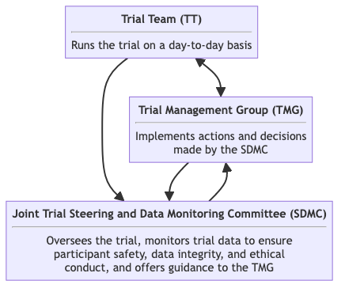

Effects of Advanced Trauma Life Support® Training Compared to Standard Care on Adult Trauma Patient Outcomes: A Cluster Randomised Trial
Trial Management Group Charter
Version 0.1.1
2024-03-06
1 Changelog
After version 1.0.0 is approved, all major and minor version updates to the charter will be documented here.
2 Introduction
The purpose of this document is to describe the membership, terms of reference, roles, responsibilities, authority, decision-making and relationships of the Trial Management Group (TMG) for the this trial, including the timing of meetings, frequency and format of meetings and relationships with other trial committees and groups.
3 Trial synopsis
Title Effects of Advanced Trauma Life Support® Training Compared to Standard Care on Adult Trauma Patient Outcomes: A Cluster Randomised Trial
Rationale Trauma is a massive global health issue. Many training programmes have been developed to help physicians in the initial management of trauma patients. Among these programmes, Advanced Trauma Life Support® (ATLS®) is the most popular, having trained over one million physicians worldwide. Despite its widespread use, there are no controlled trials showing that ATLS® improves patient outcomes. Multiple systematic reviews emphasise the need for such trials.
Aim To compare the effects of ATLS® training with standard care on outcomes in adult trauma patients.
Primary Outcome All-cause mortality within 30 days of arrival at the emergency department.
Trial Design Batched stepped-wedge cluster randomised trial in India.
Trial Population Adult trauma patients presenting to the emergency department of a participating hospital.
Sample Size 30 clusters and 4320 patients.
Eligibility Criteria
Hospitals are secondary or tertiary hospitals in India that admit or refer/transfer for admission at least 400 patients with trauma per year.
Clusters are one or more units of physicians providing initial trauma care in the emergency department of tertiary hospitals in India.
Patients participants are adult trauma patients who presents to the emergency department of participating hospitals and are admitted or transferred for admission.
Intervention The intervention will be ATLS® training, a proprietary 2.5 day course teaching a standardised approach to trauma patient care using the concepts of a primary and secondary survey. Physicians will be trained in an accredited ATLS® training facility in India.
Ethical Considerations We will use an opt-out consent approach for in-hospital data collection, in which consent is presumed unless actively declined. We will obtain informed consent for out of hospital follow up. Patients who are unconscious or lack a legally authorized representative will be included under a waiver of informed consent. Note that consent here refers to consent to data collection, as it will not be possible for patients to opt out from being subjected to the intervention. This approach is justified because the trial can be considered to involve only minimal risk and the data collection is non-invasive and mostly involve extracting routinely collected data from medical records.
Trial Period October 1, 2024, to September 30, 2029
4 Special considerations
4.1 Funding
This trial is not yet fully funded. The Trial Management Group has decided to proceed with the trial with the expectation that additional funding will be secured. The Trial Steering Committee will be informed of the funding status at each meeting. If funding is not secured, the trial will be stopped. This will likely result in an underpowered trial. The justification for this decision is that the intervention is considered standard of care in many countries and the data collection is considered minimal risk. There is therefore a very small risk of harm to patient participants, but a potential direct benefit to those patient participants who receive the intervention. The benefit-risk ratio is therefore considered to be favourable, even in the case of an underpowered trial.
4.2 Potential amendments
There are ongoing discussions about re-framing the trial as a hybrid effectiveness-implementation trial and include a cost-effectiveness analysis. This would involve adding additional data collection to assess the implementation and costs of the intervention. This would involve additional funding and amended ethical approvals.
5 Trial organisation overview

Trial management and oversight is governed by four trial committees and groups: the Trial Team (TT), the Trial Management Group (TMG), the Trial Steering Committee (TSC) and the Data Monitoring Committee (DMC). These groups are briefly described below and their relationships are shown in Figure 1. Details about each committee and group are available in their respective charter.
5.1 Trial team
Responsibility
To run the trial on a day-to-day basis, maintain trial databases, randomise clusters, ensuring complete and correct data, preparing reports for meetings (including those of the TMG, TSC and DMC) and dealing with research governance and, if appropriate, regulatory matters.
Composition
Includes the project manager, clinical research associates, principal investigator and co-investigators as needed.
Relationships
Reports to the TMG, TSC and DMC. Operationalises decisions made by the TMG.
Meeting frequencies
As often as needed, often weekly or bi-weekly.
5.2 Trial Management Group (TMG)
Responsibility
To manage the trial, including its clinical and practical aspects.
Composition
Includes members with broad expertise appropriate to the trial. The TMG will be chaired by the Principal Investigator.
Relationships
Receives reports from TT. Provides input to the TSC and DMC. Implements decisions made by the TSC.
Meeting frequencies
Monthly to every six months.
5.3 Trial Steering Committee (TSC)
Responsibility
The TSC’s responsibility is to oversee the trial and offer guidance to the TMG.
Composition
A majority of independent members, including a chair, and a minority of members with a direct interest in the trial, including the principal investigator. The chair should be independent of the trial, the sponsor, and the coordinator.
Relationships
Receives reports from the trial team and DMC.
Meeting frequencies
Yearly, but may be more frequent if needed.
5.4 Data Monitoring Committee (DMC)
Responsibility
To review results of interim analyses, safety events reported by the TMG, and review trial data for each batch, assessing data quality, completeness, cluster performance in recruitment and loss to follow-up rates, and external factors affecting trial validity, safety, or ethics.
Composition
Four external experts specializing in clinical trial management, biostatistics, medical ethics, and the pertinent clinical area.
Relationships
Reports to the TSC. Receives reports from the TT.
Meeting frequencies
After the completion of each batch, but may be more frequent if needed.
6 Roles and responsibilities
To role of the TMG is to manage the trial, including the clinical and practical aspects. The specific roles of the TMG members will be to:
- attend TMG meetings and advise on availability for future TMG meetings;
- input into and comment on the protocol and case report forms;
- allow contact details to be included in this TMG charter;
- promote the trial;
- screen hospitals and clusters for participation in the trial;
- develop strategies to encourage inclusion of patient participants and address any issues with inclusion at each trial centre;
- be involved in the day-to-day running of the trial by supporting the Trial Team;
- maintain confidentiality of any trial information that is not in the public domain;
- respond to trial correspondence and any questions in a timely fashion;
- encourage completion of case report forms (CRFs) and monitor reported CRF completion rates;
- monitor and assess safety events;
- input into the meetings of the Trial Steering Committee (TSC), if appropriate;
- input into the meetings of the Data Monitoring Committee (DMC), when appropriate;
- provide responses to any issues or concerns raised by TSC;
- consider the implications of any recommendations made by the DMC and accepted by the TSC;
- be aware of accumulating external evidence and assess its impact and relevance; and
- input into the interpretation and writing up of the trial results.
7 Before or early in the trial
The TMG will finalise the protcol and screen hospitals and clusters for participation in the trial.
TMG members will not formally sign a contract.
8 Composition
TMG members will provide broad expertise appropriate to the trial. The TMG will be chaired by the Principal Investigator. The Principal Investigator is also a member of the TSC and must attend all TSC meetings. The Principal Investigator should be available to attend DMC meetings. The other TMG members will not usually be expected to routinely attend TSC or DMC meetings but may attend sessions when necessary and appropriate. The vice-Chair will assume the responsibilities of the Chair when the Chair is not available.
The TMG includes the following members, in alphabetical order by surname, with their roles and affiliations:
Anurag Mishra
Professor of surgery
Department of Surgery, Maulana Azad Medical College, India.
Debojit Basak
Project Research Scientist
Institute of Post Graduate Medical Education & Research and Seth Sukhlal Karnani Memorial Hospital, India
Abhinav Bassi
Senior Research Fellow and Operations Lead
The George Institute for Global Health, India
Johanna Berg
Doctoral student and emergency physician
- Department of Global Public Health, Karolinska Institutet, Sweden
- Department of Emergency and Internal Medicine, Skane University Hospital, Sweden
Shamita Chatterjee
Professor of surgery
Department of Surgery, Institute of Post Graduate Medical Education & Research and Seth Sukhlal Karnani Memorial Hospital, India
Kapil Dev Soni
Professor of critical and intensive care
All India Institute of Medical Sciences, India
Martin Gerdin Wärnberg (Principal Investigator, Chair)
Associate professor of clinical epidemiology
- Department of Global Public Health, Karolinska Institutet, Sweden
- Function Perioperative Medicine and Intensive Care, Karolinska University Hospital, Sweden
Karla Hemming
Professor of biostatistics
Institute of Applied Health Research, University of Birmingham, UK
Monty Khajanchi
Assistant professor of surgery
Department of Surgery, King Edward Memorial Hospital, India
Vivekanand Jha
Executive Director
- The George Institute for Global Health, India
- Faculty of Medicine, Imperial College London, UK
Samriddhi Ranjan
Project Manager
The George Institute for Global Health, India
Nobhojit Roy
Honorary Fellow
The George Institute of Global Health, India
Rajdeep Singh
Professor of surgery
Department of Surgery, Maulana Azad Medical College, India
Lovisa Strömmer
Associate professor of surgery and senior consultant
- Department of Clinical Science, Intervention and Technology, Karolinska Institutet, Sweden
- ME Trauma Emergency surgery, Orthopaedics, Emergency and Reparative Medicine, Karolinska University Hospital, Sweden
Li Felländer-Tsai
Professor of orthopaedic surgery
Department of Clinical Science, Intervention and Technology, Karolinska Institutet, Sweden
9 Relationships
The responsibilities of each trial committee are summarised in Section 5 and in Figure 1.
10 Organisation of meetings
The TMG will meet monthly to every six months, depending on the intensity of the trial. It is expected that more meetings are required early and late in the trial. The meetings will be primarily virtual and will be organised by the trial team. On all issues, every effort should be made to achieve consensus. The role of the Chair is to summarise discussions and encourage consensus; it is therefore best for the Chair to give their own opinion last. The TMG is quorate if the Chair and at least four other members are present.
Members will be expected to send apologies in advance of any meeting they cannot attend. If a member neither attends nor sends apologies for a meeting, every effort will be made to ensure their availability for the next meeting. If a member does not attend nor send apologies for the following meeting, they will be asked if they wish to remain part of the TMG. If a member does not attend a third meeting in a row, they will be removed from the TMG, unless there are particular extenuating circumstances.
11 Reporting
The TMG will be provided with reports of inclusion rates baseline characteristics, follow-up rates, CRF return and completeness rates, and safety data. The TMG will also be provided with reports of any other relevant information, such as external evidence that may impact on the trial.
A standard report template will be used to provide information to the TSC. Additional information may be sent from the TMG to the TSC by writing via the TSC Facilitator. A short summary of each meeting with any action points clearly marked will be made. The TMG Chair will sign off these notes. The notes will be kept by the Sponsor and Coordinator.
The TSC is the oversight body for the trial. If the TMG has serious problems or concerns with a TSC decision a meeting of these groups will be held. The information to be shown would depend upon the action proposed and the TSC’s or TMG’s concerns.
Depending on the reason for the disagreement particularly sensitive trial data may have to be revealed to all or some of those attending such a meeting. The meeting would be Chaired by the DMC Chair or an external expert who is not directly involved with the trial.
12 Decision-making
The TMG is responsible for the day-to-day running of the trial and can make decisions appropriate to this role. However, the TSC is the oversight body for the trial.
12.1 TMG to TSC
The TMG should refer to the TSC in some instances. The following are examples:
- Request for additional interim analyses owing to concerns raised by external evidence;
- Stopping inclusion due to slow inclusion;
- Modifying target inclusion, or pre-analysis follow-up, based on any change to the assumptions underlying the original trial sample size calculation (but not on any emerging differences);
- Proposing substantial changes to the protocol, patient information sheet, eligibility criteria and other trial documentation; and
- Request for endorsement for the early presentation of results.
12.2 TMG to DMC
The TMG can make recommendations to the DMC. Possible recommendations from the TMG to the IDMC could include:
- Proposal of extra analyses for review by IDMC; and
- Addition of new trial sites.
12.3 TMG alone
Without referral to other committees, the TMG can:
- Propose strategies for dealing with poor inclusion rates, data quality or compliance with CRFs and/or follow-up schedules according to consistency checks or site monitoring reports.
13 After the trial
At the end of the trial there will be meetings of the TMG to discuss the final data. The core of the Writing Committee will be drawn from the TMG. TMG members will promptly return comments on any circulated drafts. The DMC and TSC members may be invited to give advice about data presentation and interpretation. Regardless of the authorship policy of the trial, TMG members will be named and their affiliations listed in the main report, unless they explicitly request otherwise.
14 Amendments
Amendments to the TMG Charter will be made by the TMG and approved by the TSC. Amendments to the TMG Charter will be reported to the TSC and DMC.